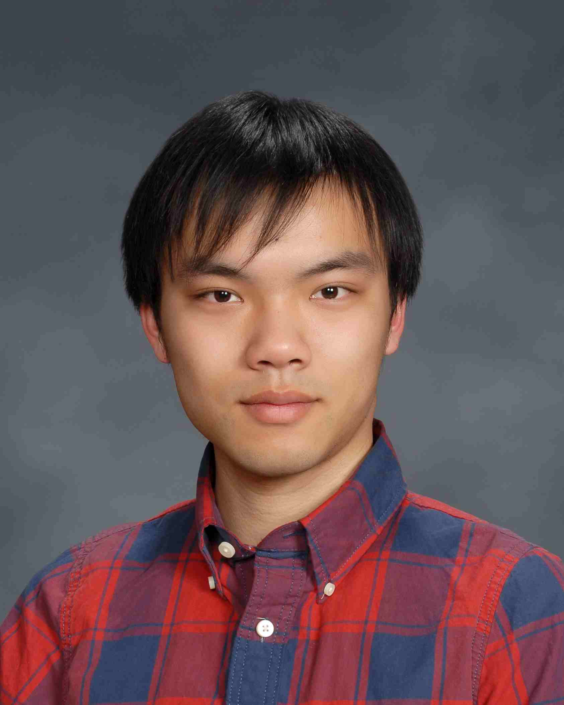

|  | Haosu Tang, Ph. D. S.M. Computational Science and Engineering Institute for Applied Computational Science (IACS) John A. Paulson School of Engineering and Applied Sciences (SEAS) Harvard University haosutang (at) gmail.com haosutang (at) g.harvard.edu (610) 844-3310 (Phone) http://haosutang.github.io |
| |
|
(Updated 01/30/2016) I'm currently a S.M. student in the Computational Science and Engineering program, Harvard University. Before being enrolled in Harvard, I obtained Ph.D. degree from department of Physics, Lehigh University. I hold B.S. from Special Class for the Gifted Young at University of Science and Technology of China. I'm interested in doing quantitative finance and data science. My past research is computational molecular cell biology from a physics point of view. Professor Dimitrios Vavylonis adviced me on my thesis. The research project focuses on building computational models to describe the complex structure and dynamics of actin network within different cell systems. Starting from simple physical properties of actin-binding proteins, we were able to build up a 3D model that qualitatively and quantitatively resembled the structures of the actin cables in fission yeast, budding yeast and spherical confinement. Long terms of scientific training equipped me with strong mathematical and coding skills. I'm familiar with developing in Python, Java and C++ as well as modeling in R, MatLab and Mathematica. I'm especially interested in integration and application of these mathematical and computational tools to solve real world problems, such as quantitative finance, data science and computational biology. I'm also a avid photographer (Gallery) and cyclist. |
|
To contact me, send E-mail to haosutang@gmail.com.